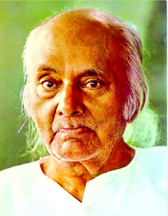

Rebel Poet
Kazi Nazrul islam is the national poet of Bangladesh who is wspecially recognized as a Bidrohi Kobi (rebel Poet) around the country. Nazrul is a famous poet, musician and philosopher of Bangaldesh. The famous poet Nazrul's writings deal with the revolution of that period of the British government. His revolutionary attempt helped his to be a national poet of Bangaldesh. He has raised his voice against any kinds of fascism and oppression and got popularity swiftly around the Indian Subcontinent.
Awesome Writer
Nazrul's writings explored themes shuch as love, freedom, humanity, and revolution. He opposed all forms of bigotry and fundamentalism, including religious, caste-based and gender-based. Throuoghout his career, Nazrul wrote short stories, novels, and essays but is best known for his songs and poems. He pioneered new music forms such as Bengali ghazals. Nazrul wrote and composed music for nearly 4,000 songs (many recorded on HMV and gramophone records), collectively known as Nazrul Geeti.

 Awards
Awards